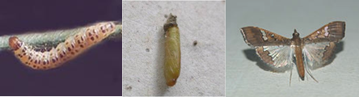

| Home |
| RED GRAM & CHICKPEA |
| 1. Gram pod borer |
| 2. blue butterfly |
| 3. grass blue butterfly |
| 4. plume moth |
| 5. Spotted pod borer |
| 6. spiny pod borer |
| 7. field bean pod borer |
| 8. pod fly |
| 9. stem fly |
| 10. eriophyid mite |
| 11. Blister beetle |
| 12. pod wasp |
| 13. flower webber |
| integrated Pest Management |
| questions |
| download notes |
PESTS OF PULSES - RED GRAM & CHICKPEA :: Major Pests :: Spotted Pod Borer
5. Spotted pod borer: Maruca testulalis (Pyraustidae: Lepidoptera)
Distribution and status: Tropical and sub tropical regions of the world.
Host range: Beans, peas, castor, groundnut, cowpea, rice, sesame, soybean, tobacco, daincha, sugarcane, redgram, lablab, niger, greengram and blackgram.
Damage symptoms: The larva bores the buds, flowers or pods; infested pods and flowers are webbed together. The larva feeds on seeds. The assessment of damage in pigeonpea pods has shown that 5-20% pods may get affected depending upon the locality, month and variety.
 |
Bionomics: Female lays eggs singly on flowers, buds or pods. After hatching larva bores buds or pods and feed on seeds. The full-grown larva is 20 mm in length. It pupates in the dry leaves (or) debris.
 |
Management
- Grow resistant cultivars like ICPL 98001, ICPL 98003, ICPL 98008, ICPL 9804
- Conserve larval parasitoids Bracon lebetor
- Chemicalcontrol measures are the same as redgram pod borer